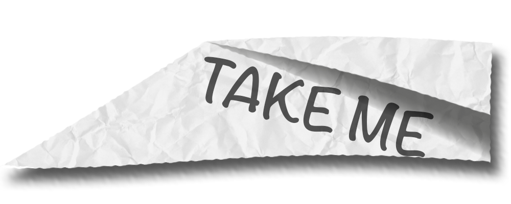
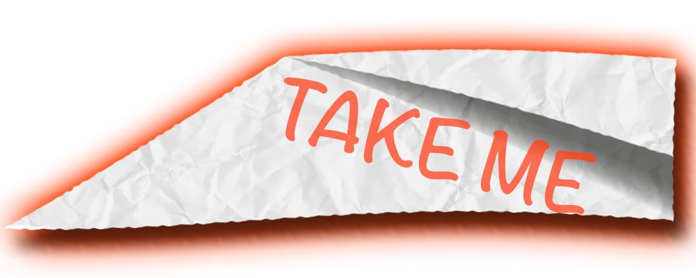

PROJECTS
  MAXIME CARUSO
entdecken | erschaffen | erzählen | erleben

Hey,
ich bin Maxime Caruso
und studiere Design Interaktiver Medien Master an der Hochschule Furtwangen. Meine Leidenschaft ist es Projekte von der Geburt einer Idee über die Konzeption bis hin zur Finalenumsätzung zu führen.
ich bin Maxime Caruso
Hiebei ist es mir wichtig nicht nur Kreative und innovative Projekte zu kreieren und zu konzepieren, sondern auch aktiv an der Produktion dieser teilzunehmen.
Deswegen sehe ich die fähigkeit einzelne tools und Programme zu nutzen nicht als Hauptfähigkeit an, sondern das Interresse Tools zu erlernen die es ermöglichen Ideen auch verwirklichen zu können.
Denn eine Idee kann nur so gut sein wie ihre spätere verwirklichung.